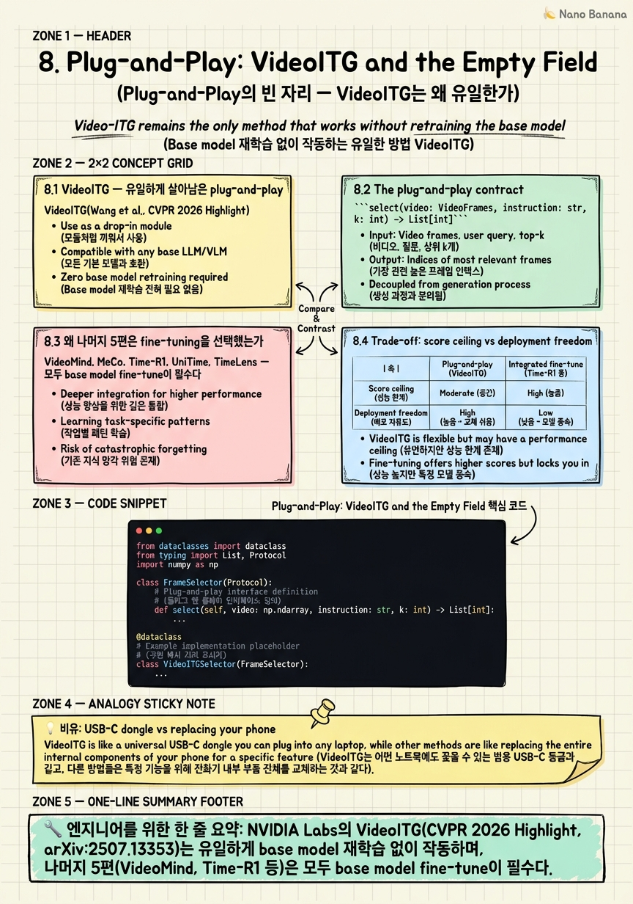

Plug-and-Play: VideoITG and the Empty Field

🎯 학습 목표
- VideoITG가 어떤 인터페이스 계약 위에서 plug-and-play로 동작하는지 설명할 수 있다
- 왜 2026년 grounding 연구의 5/6은 fine-tuning을 선택했는지를 분석할 수 있다
- VideoITG-style frame selector를 직접 구현하여 Qwen2.5-VL inference에 끼워 넣을 수 있다
- 주어진 production 제약에서 plug-and-play와 integrated method 중 어느 쪽이 우월한지 판단할 수 있다
- Plug-and-play의 미래 확장 방향 세 가지를 제시할 수 있다
이전 장들에서 본 2026년 주요 grounding 시스템 — VideoMind의 4-role Chain-of-LoRA agent(ICLR 2026), MeCo의 semantic-oriented LoRA fine-tune(ICLR 2026), Time-R1의 GRPO RL post-training(NeurIPS 2025), UniTime의 generative MLLM(NeurIPS 2025), TimeLens의 RLVR(CVPR 2026) — 은 한 가지 공통점이 있다. 모두 downstream model의 weight를 건드린다. VideoITG(arXiv:2507.13353)만이 예외다. 512 frame을 uniform sampling, instruction-conditioned scoring으로 Top-K를 고르고, 그 K개를 어떤 Video-LLM에든 그대로 넘긴다. downstream model은 자신이 frame selector를 통해 fed 되고 있다는 것조차 알 필요가 없다.
핵심 내용
8.1 VideoITG — 유일하게 살아남은 plug-and-play
VideoITG(Wang et al., NVIDIA Labs, CVPR 2026 Highlight, arXiv:2507.13353)는 ICLR 2026에서 한 번 withdraw되었다가 2026/04/09에 CVPR 2026 Highlight로 acceptance되었다. 핵심 주장: Video-LLM에게 좋은 입력 frame을 골라주는 것만으로도 downstream task 성능을 크게 끌어올릴 수 있고, 이 frame selector는 downstream model과 완전히 decoupled되어 있어야 한다.
3단계 동작: (1) Uniform sampling 512 frames: 영상 길이와 무관하게 일정한 budget으로 dense temporal coverage 확보. (2) Instructed scoring: 512 frame 각각에 대해 user instruction과의 관련성을 점수화. VideoITG는 generative하게 처리. (3) Top-K selection: downstream Video-LLM의 input budget(보통 K=32~128)에 맞춰 가장 점수가 높은 frame index 반환.
VideoITG-40K(40K videos / 500K temporal grounding annotations)는 VidThinker라는 자동 어노테이션 파이프라인으로 만들어졌다. 사람 손이 거의 들지 않은 supervision이 VideoITG의 scalability의 핵심.
결과적으로 VideoITG의 출력은 단 한 가지 — List[int] (frame indices). downstream model에 weight를 적재할 필요도, 새로운 token을 vocabulary에 추가할 필요도, KV-cache를 만질 필요도 없다.
8.2 The plug-and-play contract
select(video: VideoFrames, instruction: str, k: int) -> List[int]
세 가지 invariant:
(a) Output stability: 반환값은 항상 frame index list여야 한다. logits, embeddings, timestamp token 같은 model-specific 표현은 안 된다.
(b) Side-effect freedom: downstream model의 weight, vocabulary, KV-cache, attention pattern 어느 것도 수정하지 않는다.
(c) Instruction-only conditioning: scorer는 user instruction과 frame visual content만 입력으로 받는다.
이 세 조건이 모두 성립할 때, plug-and-play module은 downstream Video-LLM을 Qwen2.5-VL-7B에서 LLaVA-Video-72B로, 또 GPT-5V로 바꾸어도 그대로 살아남는다. 마치 USB-C dongle처럼.
이 contract의 진짜 비용: scorer 자체의 정확도다. scorer가 틀린 frame을 고르면 downstream은 그 실수를 보정할 방법이 없다.
8.3 왜 나머지 5편은 fine-tuning을 선택했는가
VideoMind, MeCo, Time-R1, UniTime, TimeLens — 모두 base model fine-tune이 필수다.
Architectural necessity: - Time-R1: GRPO + verifiable tIoU reward로 Qwen2.5-VL-7B를 post-training. RL signal은 본질적으로 model의 policy에 박혀야 학습된다. - MeCo: timestamp-free에 도달하기 위해 structural token을 vocabulary에 추가하고 query-focused captioning + contrastive grounding head를 도입. - VideoMind: 4-role Chain-of-LoRA로 같은 base에 다른 LoRA를 갈아끼운다. - UniTime: generative MLLM이 timestamp token을 직접 emit. 이 token은 vocabulary에 들어가 있어야 한다. - TimeLens: RLVR로 Qwen2.5-VL/Qwen3-VL을 TimeLens-100K 위에서 학습.
Evaluation incentive: SOTA leaderboard는 best score를 본다. Charades-STA R1@0.5에서 Time-R1*은 72.2를 찍었는데, plug-and-play로는 score ceiling이 base Video-LLM에 묶인다. Reviewer는 새 method가 SOTA를 깰 것을 요구하고, 이 압력이 fine-tuning으로 연구를 끌어당긴다.
VideoITG의 희소성은 우연이 아니다 — 2026 grounding 연구의 경제구조가 fine-tuning을 보상하도록 설계되어 있다.
8.4 Trade-off: score ceiling vs deployment freedom
| 축 | Plug-and-play (VideoITG) | Integrated fine-tune (Time-R1 등) |
|---|---|---|
| Score ceiling | downstream base model에 묶임 | base + RL/LoRA로 더 높이 가능 |
| Model swap | 무료, instant | 새 base마다 재학습 |
| Infra requirement | 추론 단 GPU만 필요 | 학습 cluster (8×H100 weeks) |
| Failure mode | scorer 실수가 downstream에 전파 | reward hacking, catastrophic forgetting |
Score ceiling이 base에 묶인다: VideoITG가 perfect frame을 골라줘도, downstream Qwen2.5-VL이 그 32개 frame을 못 푸는 query라면 끝이다. Time-R1은 같은 32 frame을 받더라도 reward 기반으로 timestamp emission policy 자체를 개선한 model이므로, frame이 다소 noisy해도 답을 끌어낼 수 있다.
Model swap의 가치: production에서 Video-LLM은 6개월마다 한 번씩 갈아끼워야 한다. Time-R1은 처음부터 GRPO 학습을 다시 돌려야 한다. VideoITG는 그날 저녁에 inference pipeline의 base 교체 한 줄로 끝난다.
Failure mode의 차이: VideoITG의 실수는 frame index list에 박혀 있어 디버그 가능. Time-R1의 reward hacking은 weight 안에 있어 retraining 외에는 손쓸 수 없다.
8.5 Production decision tree
Q1. Downstream Video-LLM을 6개월 안에 갈아끼울 가능성이 있는가? - Yes → VideoITG. - No → Q2로.
Q2. Charades-STA R1@0.5 기준 70+ 같은 SOTA score가 KPI인가? - 70+ KPI → Time-R1 또는 TimeLens. - reasonably good KPI → VideoITG.
Q3. Fine-tuning infra(8×H100 2-3주)를 운영할 수 있는가? - 가능 → Time-R1 검토. - 불가 → VideoITG.
구체 시나리오: - Startup, 4명 team, base 6개월마다 교체, KPI는 user satisfaction: VideoITG - FAANG production search, base 동결, leaderboard에서 +1%p가 비즈니스에 의미 있음: Time-R1 - Academia, paper 목표: integrated method - Embedded device, base는 on-device Qwen2.5-VL-3B로 고정: VideoITG
8.6 Plug-and-play의 미래
(1) Query-aware frame budget allocation. 현재 VideoITG는 fixed K. 그러나 counting query는 K=64가 필요하고, single-event localization은 K=8로 충분. interface는 select(video, instruction, max_k) -> List[int]로 확장.
(2) Multi-resolution per frame. 32 frame을 모두 같은 해상도로 보낼 필요는 없다. 가장 중요한 5 frame은 1024×1024로, 나머지는 448×448로. interface: select(video, instruction, token_budget) -> List[Tuple[int, Resolution]].
(3) Streaming compatibility. VideoITG의 현재 가정은 video 전체가 미리 있다. streaming에서는 frame이 실시간으로 들어온다. sliding window 위에서 incremental Top-K를 유지하는 plug-and-play scorer가 다음 큰 white space.
핵심 invariant만 지키면 contract는 더 풍부해질 수 있다.
💡 비유로 이해하기
VideoITG = USB-C dongle. dongle은 어느 phone에 꽂아도 동작한다. iPhone에서 Galaxy로, Galaxy에서 Pixel로 phone을 갈아끼워도 dongle은 그대로 산다. 대신 dongle의 한계가 곧 시스템의 한계가 된다.
Time-R1 / MeCo = replacement phone. 새 phone은 모든 게 더 빠르고 잘 통합되어 있다. 카메라, 배터리, 화면 모두 최적화. 대신 phone을 다시 갈아끼우려면 모든 설정·앱·데이터를 다시 옮겨야 한다. lock-in 비용이 크다.
Production engineer는 이 선택을 매일 한다. 정답은 몇 번 바꿀 예정인가와 얼마나 큰 성능 향상이 필요한가에 달렸다. base Video-LLM을 6개월마다 바꾼다면 dongle(VideoITG)이고, 1년 이상 고정이고 +5%p가 KPI라면 phone(Time-R1)이다.
Research community가 phone replacement(fine-tuning)에 쏠리는 이유도 이 비유로 설명된다 — leaderboard는 phone benchmark를 본다. dongle paper는 평가받기 힘들다.
💻 코드 예시
VideoITG-style plug-and-play frame selector를 stub model로 구현하고 Qwen2.5-VL inference call에 끼워 넣는다.
from dataclasses import dataclass
from typing import List, Protocol
import numpy as np
class FrameSelector(Protocol):
def select(self, video: np.ndarray, instruction: str, k: int) -> List[int]:
...
@dataclass
class VideoITGSelector:
sample_budget: int = 512
scorer: callable = None
def select(self, video: np.ndarray, instruction: str, k: int) -> List[int]:
T = video.shape[0]
n = min(self.sample_budget, T)
cand_idx = np.linspace(0, T - 1, n, dtype=int)
cand_frames = video[cand_idx]
scores = self.scorer(cand_frames, instruction)
topk_local = np.argpartition(-scores, k)[:k]
chosen = sorted(cand_idx[topk_local].tolist())
return chosen
def stub_scorer(frames: np.ndarray, instruction: str) -> np.ndarray:
rng = np.random.default_rng(hash(instruction) % (2**32))
return rng.random(len(frames))
def answer_with_qwen25vl(video, instruction, qwen_model, selector, k=32):
chosen_idx = selector.select(video, instruction, k)
chosen_frames = video[chosen_idx]
return qwen_model.generate(frames=chosen_frames, prompt=instruction)
selector = VideoITGSelector(scorer=stub_scorer)
# Same selector works with any downstream model:
# answer_with_qwen25vl(video, "Where does the chef add salt?", qwen_model, selector)
# answer_with_qwen25vl(video, "Where does the chef add salt?", llava_video_model, selector)FrameSelector Protocol이 plug-and-play contract 그 자체다 — select(video, instruction, k) -> List[int]. 이 시그니처를 만족하는 어떤 구현도 downstream 코드 변경 없이 끼울 수 있다. VideoITGSelector는 (1) uniform sample 512 frames, (2) instruction-conditioned scoring, (3) Top-K 선택을 그대로 따른다. answer_with_qwen25vl 함수가 핵심 — Qwen2.5-VL은 frames와 prompt만 받지, 어떤 selector가 frame을 골랐는지 알지 못한다.
🏭 현업에서의 평가
✅ 시니어가 보는 것
- Output stability — selector의 반환값이 frame index list 하나로 고정
- Side-effect freedom — downstream model의 weight/vocabulary/KV-cache를 건드리지 않음
- Instruction-only conditioning
- Score ceiling 측정 — base Video-LLM 단독 score 대비 selector 추가 시 얼마나 향상되는가
- Failure mode visibility
- Inference latency
- Model swap cost
⚠️ 레드 플래그
- Selector가 downstream model의 hidden state를 입력으로 받음
- Plug-and-play를 표방하지만 vocabulary에 새 token을 추가
- downstream model 교체 시 selector도 재학습 필요
- Score ceiling이 base Video-LLM과 동일한데 latency만 늘어남
- fine-tune SOTA 대비 격차가 10%p 이상인데 명분 없음
🎤 예상 인터뷰 질문
- Q1. 2026년 주요 6편의 grounding 논문 중 5편이 plug-and-play를 포기하고 fine-tuning을 택했다. 그 이유를 architectural necessity와 evaluation incentive 두 축으로 설명하라.
- Q2. 한 startup이 VideoITG와 Time-R1 중 무엇을 도입할지 묻는다. base Video-LLM이 6개월마다 교체되고, KPI는 user satisfaction이며, 학습 인프라는 없다. 무엇을 추천하며 근거는?
- Q3. 한 engineer가 내가 만든 frame selector도 plug-and-play다 — downstream model을 fine-tune하지 않으니까라고 주장한다. 그러나 selector의 출력이 model-specific embedding 256-dim vector이고, downstream model이 새 projection layer를 추가해야 한다. 이 selector는 plug-and-play인가?
✨ 핵심 요약
VideoITG는 2026 주요 6편 중 유일한 plug-and-play
NVIDIA Labs의 VideoITG(CVPR 2026 Highlight, arXiv:2507.13353). 나머지 5편은 모두 base model fine-tune이 필수다.
Plug-and-play 계약은 세 invariant
(a) output stability, (b) side-effect freedom, (c) instruction-only conditioning. 셋 중 하나라도 깨지면 model swap 자유도가 사라진다.
Plug-and-play의 희소성은 우연이 아니라 경제구조
GRPO RL·새 vocabulary token·LoRA adapter는 base 내부에 신호를 박아야 작동하는 architectural necessity. SOTA leaderboard가 plug-and-play 카테고리를 따로 평가하지 않는 evaluation incentive까지 더해진다.
Score ceiling vs deployment freedom의 trade-off
VideoITG는 base의 강점을 보존하지만 약점도 그대로 물려받는다. Time-R1*은 Charades-STA R1@0.5 72.2의 score ceiling을 얻지만, base가 바뀌면 GRPO 재학습이 필요하다.
Production decision tree는 3 질문으로 끝난다
(Q1) base를 6개월 안에 교체할 가능성? (Q2) SOTA score가 KPI인가? (Q3) 학습 infra를 운영 가능한가?
USB-C dongle 비유로 한 줄 정리
VideoITG는 dongle — 어떤 base Video-LLM에도 꽂힌다. Time-R1은 replacement phone — 더 빠르고 잘 통합되지만 lock-in 비용이 크다.